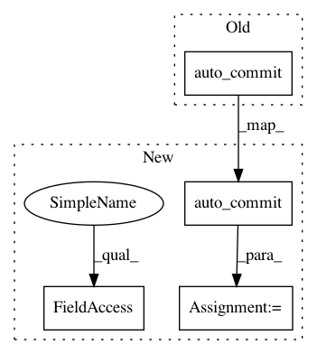

c556d3580a8f10afe23a2743adf46941ca1cde78,Orange/widgets/data/owpythonscript.py,OWPythonScript,__init__,#OWPythonScript#,396
Before Change
self.controlBox.layout().addWidget(w)
self.execute_button = gui.auto_commit(
self.controlArea, self, "auto_execute", "Run",
checkbox_label="Autorun on new data").button
After Change
self.controlBox.layout().addWidget(w)
auto = gui.auto_commit(self.controlArea, self, "auto_execute", "Run",
checkbox_label="Autorun on new data")
self.execute_button, self.autobox = auto.button, auto.checkbox
self.splitCanvas = QSplitter(Qt.Vertical, self.mainArea)
self.mainArea.layout().addWidget(self.splitCanvas)
In pattern: SUPERPATTERN
Frequency: 3
Non-data size: 4
Instances
Project Name: biolab/orange3
Commit Name: c556d3580a8f10afe23a2743adf46941ca1cde78
Time: 2017-09-11
Author: janez.demsar@fri.uni-lj.si
File Name: Orange/widgets/data/owpythonscript.py
Class Name: OWPythonScript
Method Name: __init__
Project Name: biolab/orange3
Commit Name: 02b93629db0378af16479b07526f2945848ae994
Time: 2016-01-08
Author: janez.demsar@fri.uni-lj.si
File Name: Orange/widgets/regression/owlinearregression.py
Class Name: OWLinearRegression
Method Name: __init__
Project Name: biolab/orange3
Commit Name: 51aa7adbc1371e159afb28b7b42bcec876d1635c
Time: 2016-04-15
Author: janez.demsar@fri.uni-lj.si
File Name: Orange/widgets/unsupervised/owdistances.py
Class Name: OWDistances
Method Name: __init__